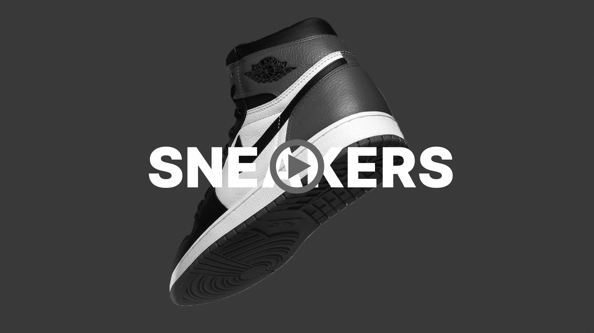
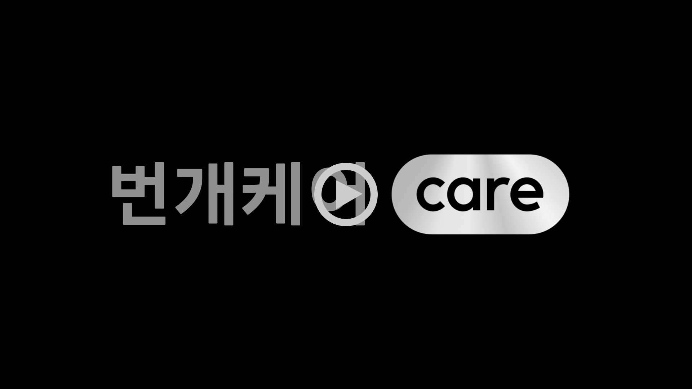
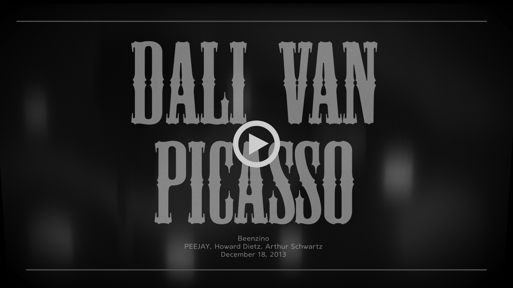

[번개장터] 앱 홍보 영상
중고거래 앱 [번개장터] 홍보 영상입니다.
지인과의 톡으로 영상이 시작되며, 중고거래를 해본적 없던 지인의 걱정들이 메세지로 나열됩니다.
보내온 걱정들은 영상의 전달할 내용들이며, 보는사람으로 하여금 주내용의 영상이 나오기전 주제를 쉽게 인식할 수 있도록 제작하였습니다.
"없는게 없다"
번개장터는 1700만명의 누적 가입자 수를 자랑하는 인기 앱 입니다.
영상 초반부 카테고리별 다양한 종류의 제품을 텍스트와 이미지를 빠르게 교차시켜 다양한 제품들이 활발히 거래가 이루어지는 느낌을 강조 하였습니다.
"번개페이 안전거래시스템"
중고거래 특성상 사기범죄에 대한 불신으로 시작하기를 꺼려하는 분들을 위해
영상 후반부 "번개페이"를 통한 안전거래시스템에 대한 설명과 사용과정을
영상내 스마트폰과 텍스트에 자연스러운 모션으로 지루하지 않게 전달 할 수 있도록 하였습니다.

[번개장터] 앱 홍보 영상_02
고가의 제품을 거래하시는 분들에게 항상 따라다니는 가품걱정을 덜어드릴 수 있는
번개장터만의 "300% 정품검수 & 전문가 크리닝 서비스" 소개하는 영상입니다.
민트색계열의 컬러와 Grid효과, 그리고 돋보기 트래킹을 활용하여 정품검수의 정밀한 느낌이 나도록 연출하였습니다.

평소 즐겨듣던 래퍼 Beenzino의 [Dali Van Picasso]를 Illustrator 와 Photo shop을 활용해 제작한 영상입니다.
Beenzino는 어릴적부터 유명화가인 살바도르 달리, 반고흐, 파블로 피카소에게 영감을 많이 받았으며, 현재 본인은 그들의 영혼이 깃든 21세기 아티스트임을 표현하는 내용입니다.
영상초반부 반고흐의 '별이 빛나는 밤'을 시작으로 살바도르달리의 '욕망의 수수께끼', 피카소의'꿈'까지 예술적인 요소들을 가사내용의 흐름과 잘 녹여내는데 중점을 두었고,
영상 후반부로 갈 수록 현대화된 21세기의 느낌을 낼 수 있도록 작업을 진행하였습니다.
마지막으로 과거와 현재의 영감이 공존한다는 것을 표현하기 위해 현대적인 느낌에서 영상 초반부 나오는 반고흐의 '별이 빛나는 밤'의 반짝이는 달과 와인을 다시 등장시켜 마무리 하였습니다.